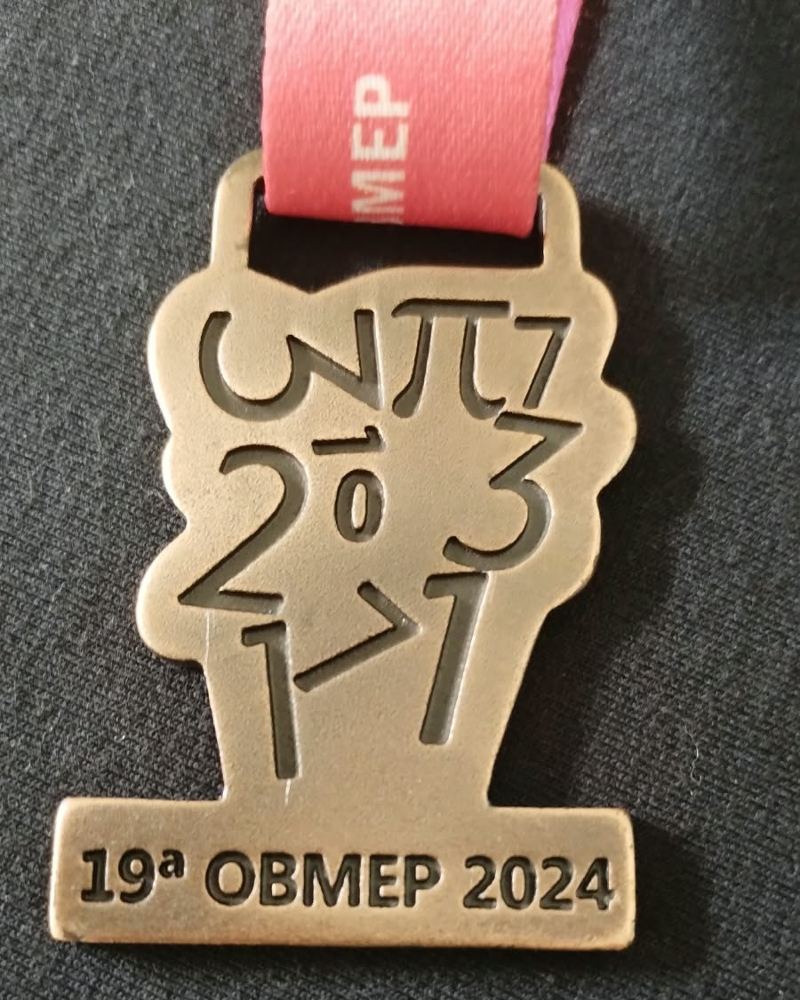
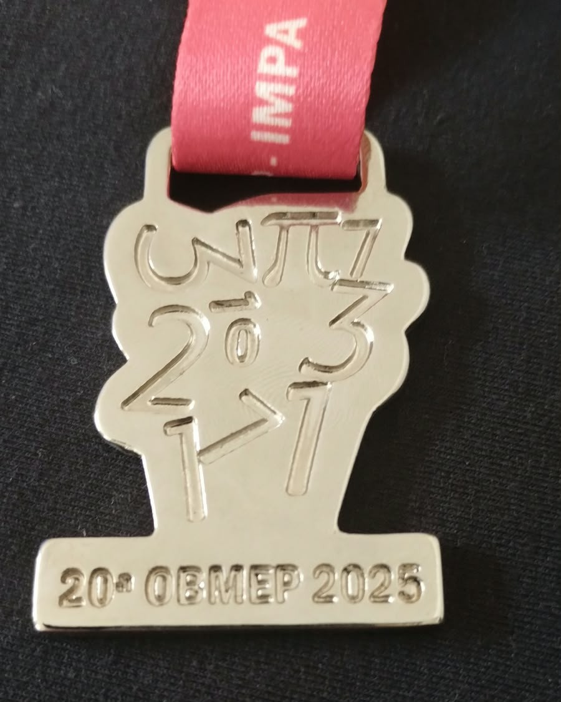
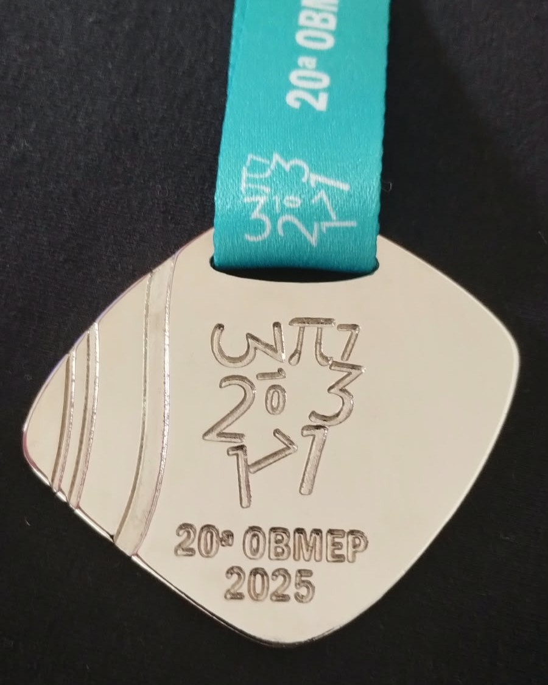

Minha Carreira
Formação Acadêmica
Desenvolvimento de Sistemas :
Atualmente, curso Desenvolvimento de Sistemas na ETEC Pedro Ferreira Alves (em Mogi Mirim), onde desenvolvo conhecimentos em programação, lógica computacional e desenvolvimento de software. Essa formação me permite explorar diferentes áreas da tecnologia, aprimorar minhas habilidades e transformar o conhecimento adquirido em projetos práticos.
Cursos e Certificados
Cursos :
Certificados :



Habilidades Técnicas
Possuo conhecimentos em desenvolvimento web, utilizando HTML, CSS, JavaScript e Bootstrap, além de noções de lógica de programação, banco de dados e sistemas embarcados. Também tenho familiaridade com ferramentas como Microsoft Word, Excel e Canva, além de diferentes ferramentas de inteligência artificial. Tenho facilidade com Matemática e gosto de utilizar o raciocínio lógico para resolver problemas e desenvolver soluções. Busco constantemente ampliar meus conhecimentos e aprimorar minhas habilidades na área da tecnologia.